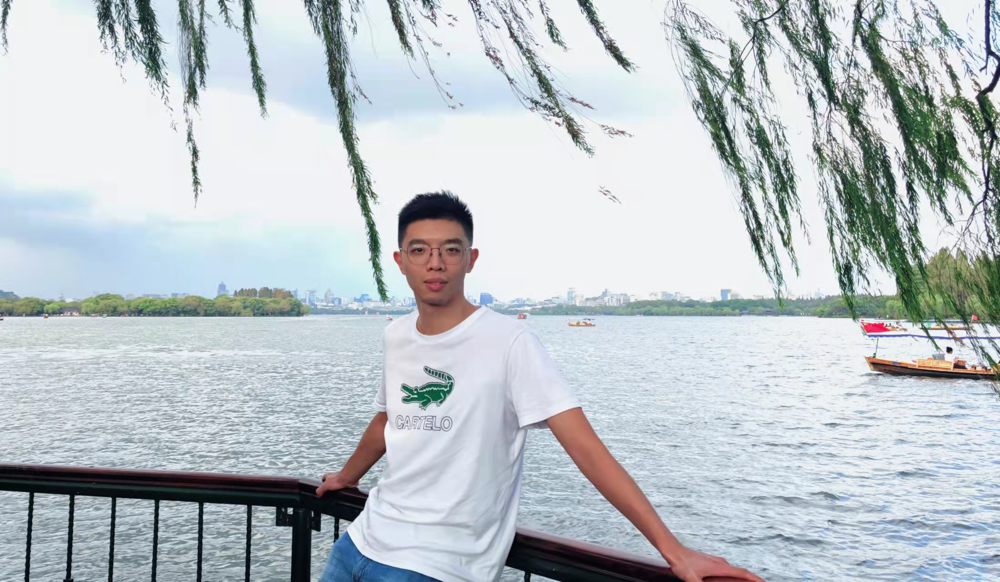
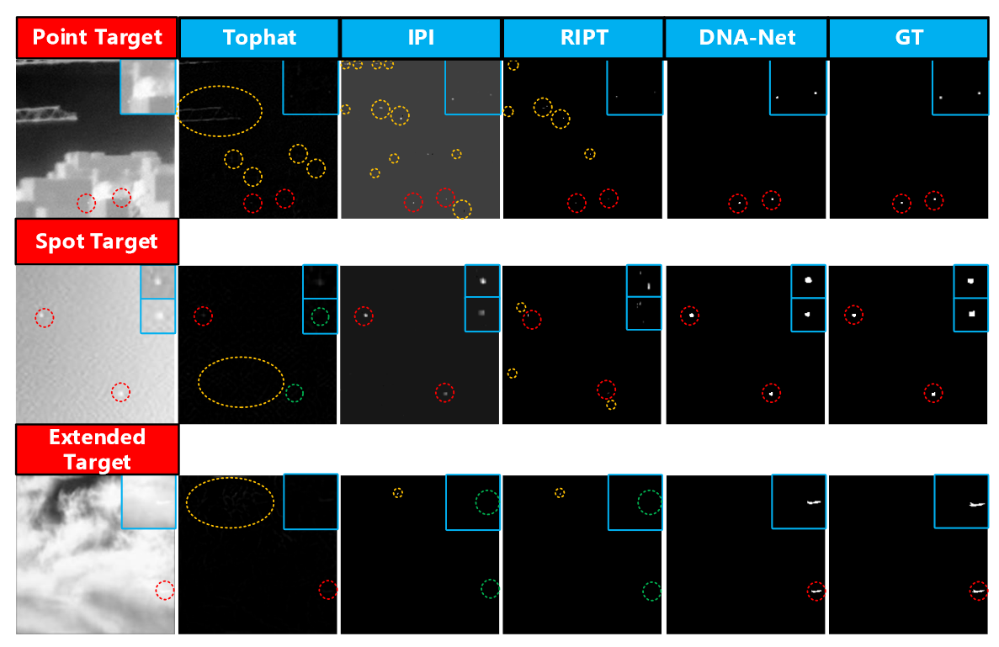
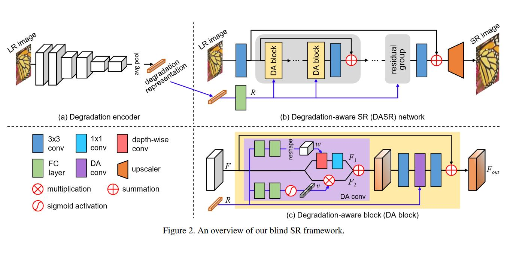
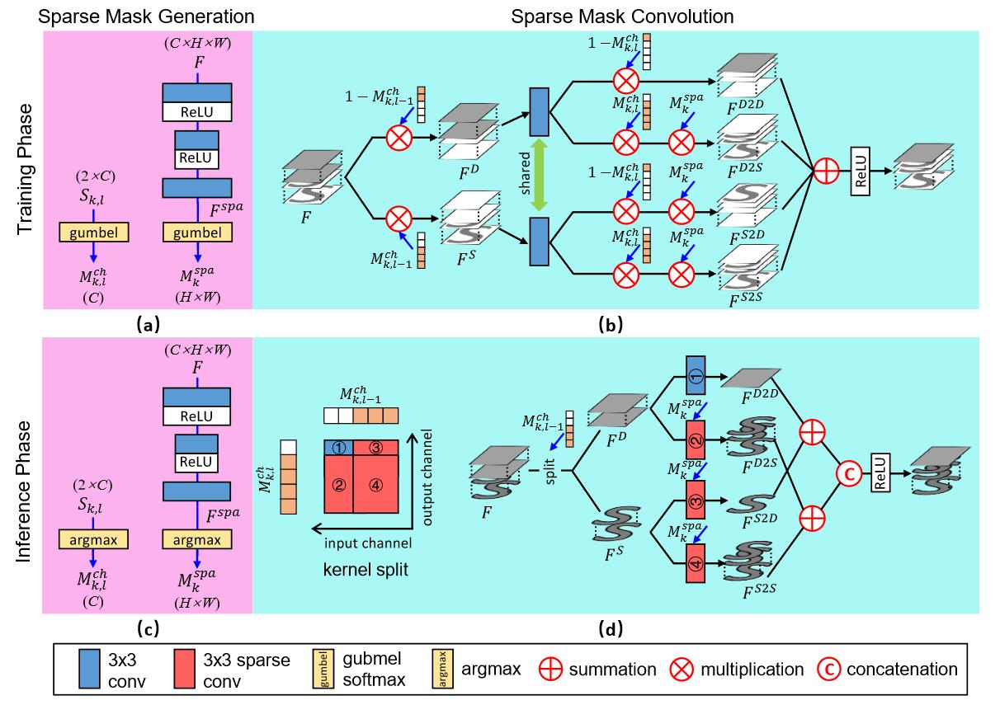
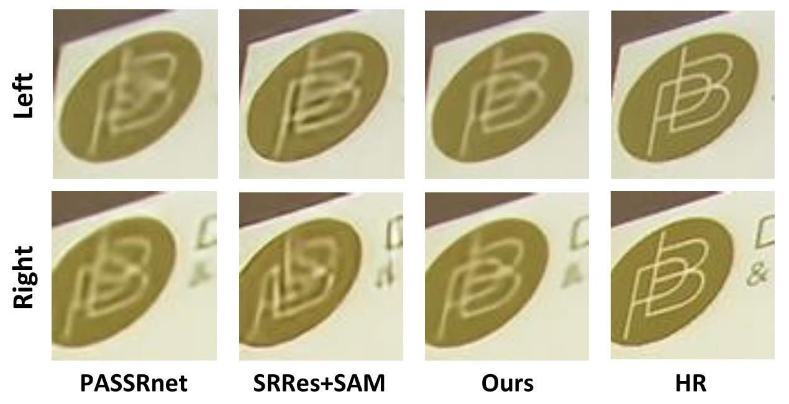
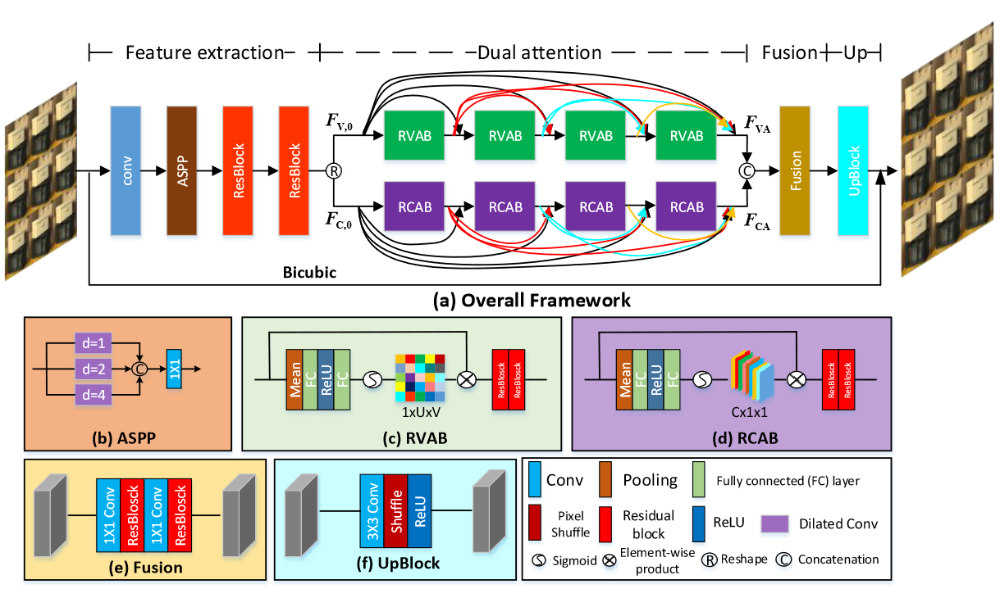
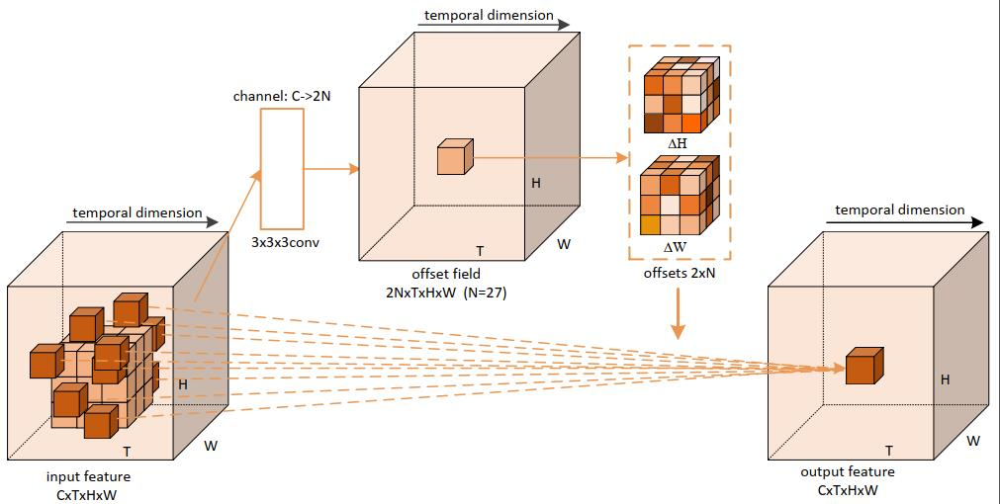

Yingqian Wang 王应谦
Ph.D. Student
Research Gate |
Github |
Google Scholar
National University of Defense Technology (NUDT), China
Email: wangyingqian16@nudt.edu.cn
Brief Bio
I received my B.E. degree from Shandong University in 2016, and received my M.E. degree from NUDT in 2018.
Currently, I'm working toward the Ph.D. degree with the College of Electronic Science and Technology, NUDT.
My research interests mainly focus on low-level vision, particularly on
light field imaging and image super-resolution.
News
2021.11 | Our paper "Non-Convex Tensor Low-Rank Approximation for Infrared Small Target Detection" is accepted by TGRS. [pdf]
2021.11 | Our paper "Detecting and Tracking Small and Dense Moving Objects in Satellite Videos: A Benchmark" is accepted by TGRS.
2021.10 | Our paper "DARDet: A Dense Anchor-free Rotated Object Detector in Aerial Images" is accepted by GRSL. [pdf] [code]
2021.10 | Our paper "Dense Dual-Attention Network for Light Field Image Super-Resolution" is accepted by TCSVT. [pdf]
2021.10 | Our paper "Arbitrary-Oriented Ship Detection through Center-Head Point Extraction" is accepted by TGRS. [pdf] [code]
2021.10 | Our paper "Spatial-Angular Attention Network for Light Field Reconstruction" is accepted by TIP.
2021.09 | Our invited Chinese survey on stereo image SR is accepted by Laser & Optoelectronics Progress.
2021.09 | One paper on SR-based remote sensing ship detection is accepted by GRSL. [pdf]
2021.07 | Our paper "Learning a Single Network for Scale-Arbitrary Super-Resolution" is accepted to ICCV 2021.
2021.06 | One paper on remote sensing image classification is accepted by TGRS. [pdf]
2021.04 | Our paper "Symmetric Parallax Attention for Stereo Image Super-Resolution" is accepted as an oral paper to NTIRE 2021.
2021.03 | Our paper "Unsupervised Degradation Representation Learning for Blind Super-Resolution" is accepted to CVPR 2021.
2021.03 | Our paper "Exploring Sparsity in Image Super-Resolution for Efficient Inference" is accepted to CVPR 2021.
2020.11 | Our paper "Light Field Image Super-Resolution Using Deformable Convolution" is accepted by TIP.
2020.09 | An online tutorial (120 min in Chinese) regarding our Parallax Attention Mechanism is available here.
2020.09 | Our paper "Parallax Attention for Unsupervised Stereo Correspondence Learning" is accepted by TPAMI.
2020.07 | Our paper "Spatial-Angular Interaction for Light Field Image Super-Resolution" is accepted to ECCV 2020.
2020.04 | We have collected and released some useful recources on Stereo Image SR and LF Image SR.
2019.12 | Our paper "DeOccNet: Learning to See Through Foreground Occlusions in Light Fields" is accepted to WACV 2020.
2019.03 | A large-scale dataset for stereo image super-resolution is available online at Flickr1024.
2019.02 | Our paper "Learning Parallax Attention for Stereo Image Super-Resolution" is accepted to CVPR 2019.
2021.11 | Our paper "Detecting and Tracking Small and Dense Moving Objects in Satellite Videos: A Benchmark" is accepted by TGRS.
2021.10 | Our paper "DARDet: A Dense Anchor-free Rotated Object Detector in Aerial Images" is accepted by GRSL. [pdf] [code]
2021.10 | Our paper "Dense Dual-Attention Network for Light Field Image Super-Resolution" is accepted by TCSVT. [pdf]
2021.10 | Our paper "Arbitrary-Oriented Ship Detection through Center-Head Point Extraction" is accepted by TGRS. [pdf] [code]
2021.10 | Our paper "Spatial-Angular Attention Network for Light Field Reconstruction" is accepted by TIP.
2021.09 | Our invited Chinese survey on stereo image SR is accepted by Laser & Optoelectronics Progress.
2021.09 | One paper on SR-based remote sensing ship detection is accepted by GRSL. [pdf]
2021.07 | Our paper "Learning a Single Network for Scale-Arbitrary Super-Resolution" is accepted to ICCV 2021.
2021.06 | One paper on remote sensing image classification is accepted by TGRS. [pdf]
2021.04 | Our paper "Symmetric Parallax Attention for Stereo Image Super-Resolution" is accepted as an oral paper to NTIRE 2021.
2021.03 | Our paper "Unsupervised Degradation Representation Learning for Blind Super-Resolution" is accepted to CVPR 2021.
2021.03 | Our paper "Exploring Sparsity in Image Super-Resolution for Efficient Inference" is accepted to CVPR 2021.
2020.11 | Our paper "Light Field Image Super-Resolution Using Deformable Convolution" is accepted by TIP.
2020.09 | An online tutorial (120 min in Chinese) regarding our Parallax Attention Mechanism is available here.
2020.09 | Our paper "Parallax Attention for Unsupervised Stereo Correspondence Learning" is accepted by TPAMI.
2020.07 | Our paper "Spatial-Angular Interaction for Light Field Image Super-Resolution" is accepted to ECCV 2020.
2020.04 | We have collected and released some useful recources on Stereo Image SR and LF Image SR.
2019.12 | Our paper "DeOccNet: Learning to See Through Foreground Occlusions in Light Fields" is accepted to WACV 2020.
2019.03 | A large-scale dataset for stereo image super-resolution is available online at Flickr1024.
2019.02 | Our paper "Learning Parallax Attention for Stereo Image Super-Resolution" is accepted to CVPR 2019.
Preprint


Selected Publications --- 2021


Learning a Single Network for Scale-Arbitrary Super-Resolution
Longguang Wang, Yingqian Wang, Zaiping Lin, Jungang Yang, Wei An, Yulan Guo
ICCV , 2021

Unsupervised Degradation Representation Learning for Blind Super-Resolution
Longguang Wang, Yingqian Wang, Xiaoyu Dong, Qingyu Xu, Jungang Yang, Wei An, Yulan Guo
CVPR , 2021

Exploring Sparsity in Image Super-Resolution for Efficient Inference
Longguang Wang, Xiaoyu Dong, Yingqian Wang, Xinyi Ying, Zaiping Lin, Wei An, Yulan Guo
CVPR , 2021

Symmetric Parallax Attention for Stereo Image Super-Resolution
Yingqian Wang*, Xinyi Ying*, Longguang Wang, Jungang Yang, Wei An, Yulan Guo
CVPRW, 2021.
Spatial-Angular Attention Network for Light Field Reconstruction
Gaochang Wu, Yingqian Wang, Yebin Liu, Lu Fang, Tianyou Chai
IEEE TIP, 2021.

Dense Dual-Attention Network for Light Field Image Super-Resolution
Yu Mo, Yingqian Wang, Chao Xiao, Jungang Yang, Wei An
IEEE TCSVT, 2021.
| Paper
Selected Publications --- 2020


Spatial-Angular Interaction for Light Field Image Super-Resolution
Yingqian Wang, Longguang Wang, Jungang Yang, Wei An, Jingyi Yu, Yulan Guo
ECCV , 2020

DeOccNet: Learning to See Through Foreground Occlusions in Light Fields
Yingqian Wang, Tianhao Wu, Jungang Yang, Longguang Wang, Wei An, Yulan Guo
WACV, 2020.
Selected Publications --- 2019


Teaching Assistance
Lecture: Optical Imaging and Detection (Spring Term, 2021)
Lecture: Optical Imaging and Detection (Autumn Term, 2020)
Lecture: Signals and Systems (Spring Term, 2020)
Lecture: Target Detection and Signal Processing (Autumn Term, 2019)
Lecture: Target Detection and Signal Processing (Autumn Term, 2018)
Lecture: Optical Imaging and Detection (Autumn Term, 2020)
Lecture: Signals and Systems (Spring Term, 2020)
Lecture: Target Detection and Signal Processing (Autumn Term, 2019)
Lecture: Target Detection and Signal Processing (Autumn Term, 2018)
Conference Reviewer
IEEE Conference on Computer Vision and Pattern Recognition (CVPR), 2022
International Conference on Computer Vision (ICCV), 2021
ACM International Conference on Multimedia (ACM MM), 2021
New Trends in Image Restoration and Enhancement Workshop (CVPRW)
IEEE International Conference on Multimedia and Expo (ICME)
International Conference on Pattern Recognition (ICPR)
International Conference on Image and Graphics (ICIG)
CAAI International Conference on Artificial Intelligence (CICAI)
International Conference on Computer Vision (ICCV), 2021
ACM International Conference on Multimedia (ACM MM), 2021
New Trends in Image Restoration and Enhancement Workshop (CVPRW)
IEEE International Conference on Multimedia and Expo (ICME)
International Conference on Pattern Recognition (ICPR)
International Conference on Image and Graphics (ICIG)
CAAI International Conference on Artificial Intelligence (CICAI)
Journal Reviewer
IEEE Transactions on Image Processing (IEEE T-IP)
IEEE Transactions on Circuits and Systems for Video Technology (IEEE T-CSVT)
IEEE Geoscience and Remote Sensing Letters (IEEE GRSL)
Elsevier Knowledge-Based Systems
IET Computer Vision
IET Image Processing
IEEE Access
IEEE Transactions on Circuits and Systems for Video Technology (IEEE T-CSVT)
IEEE Geoscience and Remote Sensing Letters (IEEE GRSL)
Elsevier Knowledge-Based Systems
IET Computer Vision
IET Image Processing
IEEE Access
Awards & Honors
2021 | Outstanding Master Dissertation Award of Hunan Province
2018 | Guanghua Scholarship
2016 | Excellent Graduates of Shandong Province
2015 | National Scholarship (Ministry of Education, Top 2%)
2015 | The 1st Prize in the Final of China Mathematics Competitions (45 winners over 63K participants, Top 0.07%)
2015 | The 1st Prize in China Mathematics Competitions
2014 | National Scholarship (Ministry of Education, Top 2%)
2014 | The 1st Prize in China Mathematics Competitions
2013 | National Scholarship (Ministry of Education, Top 2%)
2013 | The 1st Prize in China Mathematics Competitions
2018 | Guanghua Scholarship
2016 | Excellent Graduates of Shandong Province
2015 | National Scholarship (Ministry of Education, Top 2%)
2015 | The 1st Prize in the Final of China Mathematics Competitions (45 winners over 63K participants, Top 0.07%)
2015 | The 1st Prize in China Mathematics Competitions
2014 | National Scholarship (Ministry of Education, Top 2%)
2014 | The 1st Prize in China Mathematics Competitions
2013 | National Scholarship (Ministry of Education, Top 2%)
2013 | The 1st Prize in China Mathematics Competitions

Last updated: 2021-12-07